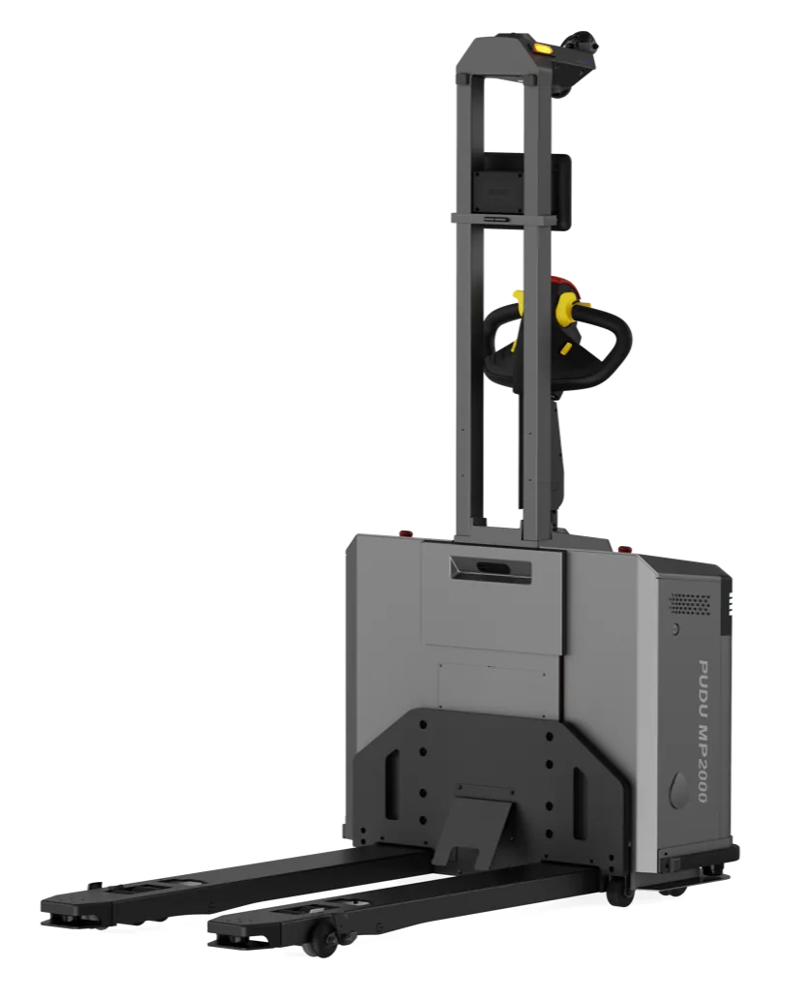
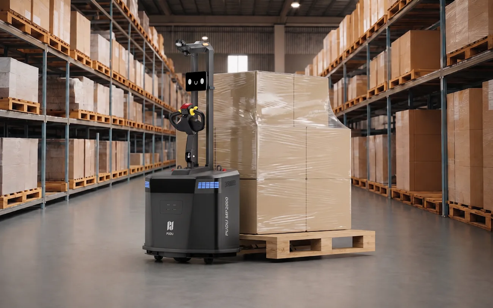
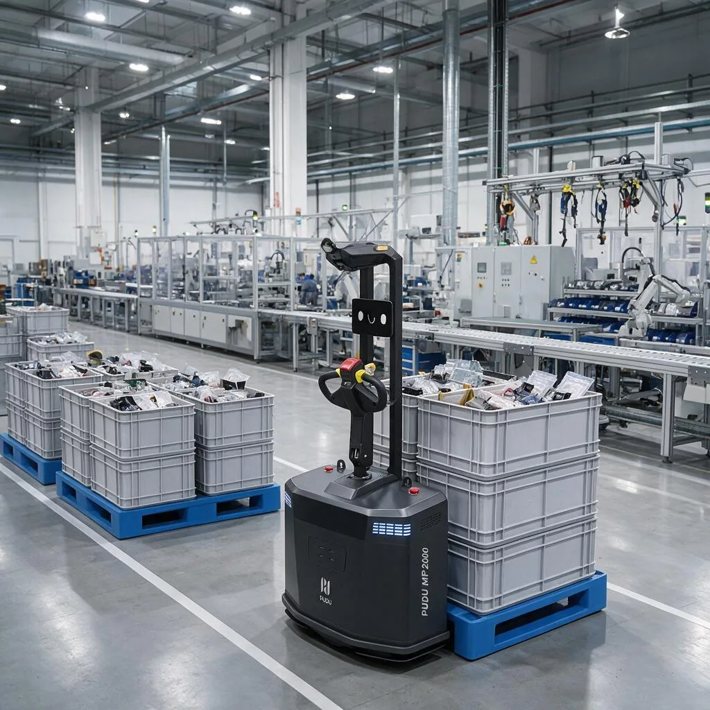
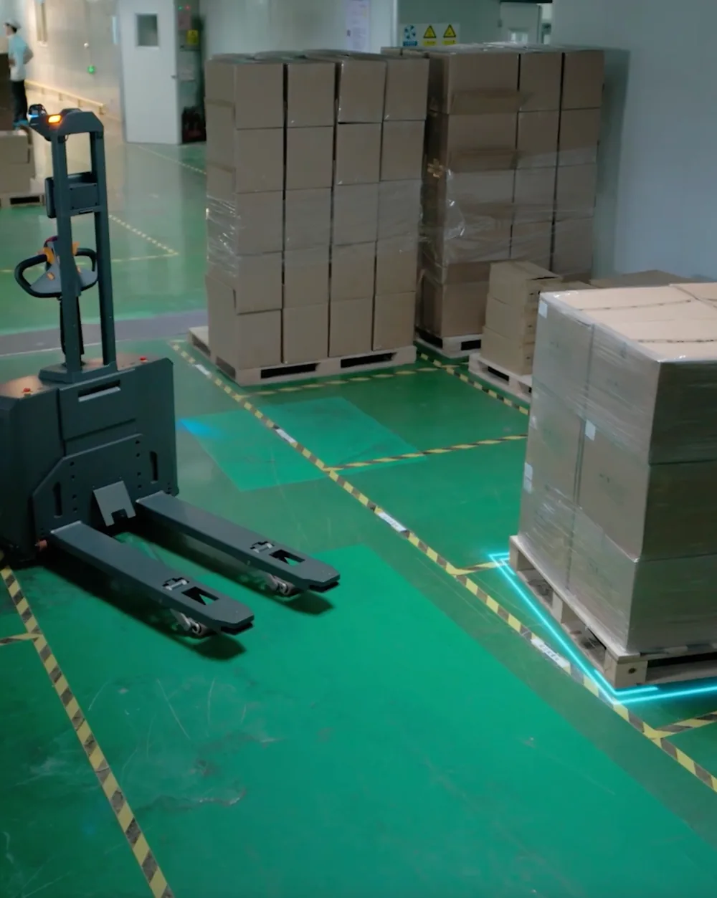

MP2000 Transpaleta autónoma para palés de 2.000 kg
Recoge y deja palés sin reflectores ni marcas en el suelo, con entrada de horquillas en unos 20 s. Trabaja en pasillos de apilado a 90° de 2,0 m y coordina varias unidades sin red ni servidor.
PVP 30.000 €
- Carga útil2.000 kg
- Velocidad sin carga / con carga1,6 / 1,2 m/s
- Autonomíahasta 12 h
- Pasillo de apilado a 90°2,0 m

Especificaciones a confirmar
La presentación indica que las especificaciones están sujetas a la matriz de prestaciones y a la ficha de parámetros que se confirmen con el fabricante.
Ancho de horquillas
Existen dos versiones, con 550 mm o 620 mm de ancho exterior de horquillas. Conviene confirmar cuál corresponde según los palés del cliente.
Altura de trabajo
Es una transpaleta de elevación baja (hasta 200 mm): solo cubre almacenamiento en suelo y el primer nivel de estantería, no estanterías en altura.
¿Qué es el MP2000?
El MP2000 es una transpaleta autónoma (AMR de palés) para el transporte horizontal de palés de hasta 2.000 kg en muelles, almacenes, zonas junto a línea y talleres. Navega con SLAM 3D (LiDAR 3D y visión), detecta la posición del palé y la ocupación de las ubicaciones, y admite conducción automática o manual. Cubre almacenamiento en suelo y el primer nivel de estantería.
Sin adaptar la instalación
Se localiza con LiDAR 3D y visión, sin reflectores ni marcas en el suelo; el mapeo y la puesta en marcha se hacen en minutos.
Tolerancia con el palé
Entra en palés desplazados hasta 15 cm o girados hasta 15°, de tres patines o de base perimetral, en unos 20 s.
Ubicaciones y flota autónomas
Detecta qué ubicaciones están ocupadas, elige destino y ruta, y coordina varias unidades sin red ni servidor.
Percepción de 360°
LiDAR 3D y 2D, cámaras, proyector de contorno y LiDAR en la punta de las horquillas: se detiene ante objetos en movimiento y rodea obstáculos fijos.
Aplicaciones del MP2000
Escenarios en los que encaja el MP2000.
- Recepción y expedición de palés en muelles
- Almacenamiento en suelo y en primer nivel de estantería
- Abastecimiento de línea desde zonas de preparación
- Traslado de producto terminado a almacén y expedición
- Centros de distribución y transferencia de carga urgente
- Reposición para picking y consolidación en e-commerce
Especificaciones técnicas del MP2000
General
| Tipo | transpaleta autónoma de horquillas |
|---|---|
| Dimensiones (largo × ancho × alto) | 1.585 × 910 × 1.870 mm |
| Peso con batería | 420 kg |
| Modo de conducción | automático o manual (timón de control) |
| Pantalla | LCD |
Carga y horquillas
| Carga útil nominal | 2.000 kg |
|---|---|
| Altura de horquillas | 80 a 200 mm (máx. 200 ± 5 mm) |
| Dimensiones de horquillas (largo × ancho × grosor) | 1.130 × 160 × 60 mm |
| Ancho exterior de horquillas | 550 o 620 mm (dos versiones) |
| Tiempo de entrada de horquillas | 20 s |
| Tipos de palé | de largueros o de bloques; de tres patines y de base perimetral |
| Tolerancia de posición del palé | 15 cm de desplazamiento, 15° de desviación |
| Cobertura | almacenamiento en suelo y primer nivel de estantería |
Movimiento y navegación
| Navegación | SLAM con LiDAR 3D + VSLAM |
|---|---|
| Tracción | rueda motriz direccional (avance, retroceso y giro), con rueda auxiliar |
| Velocidad nominal | 1,6 m/s sin carga, 1,2 m/s con carga |
| Precisión de posicionamiento | ±10 mm |
| Radio mínimo de giro | 1.350 mm |
| Ancho mínimo de pasillo recto sin carga | 1,1 m |
| Ancho mínimo de pasillo de giro sin carga | 2.000 mm |
| Pasillo de apilado a 90°, palé 1.000 × 1.200 mm | 2.000 mm |
| Pasillo de apilado a 90°, palé 800 × 1.200 mm | 1.960 mm |
| Escalón superable | 10 mm |
| Hueco superable | 35 mm |
| Pendiente superable | 3° con carga, 8° sin carga |
Batería y carga
| Batería | fosfato de hierro y litio, 51,2 V; 60 Ah nominal (54,9 Ah típica) |
|---|---|
| Autonomía | 12 h sin carga, 6 h con carga |
| Tiempo de recarga completa | 2 h |
| Métodos de carga | automática en estación y manual |
Sensores y seguridad
| LiDAR | 3D y 2D |
|---|---|
| Cámaras | superior, frontal y de profundidad |
| Evasión de obstáculos | con LiDAR y 3D; se detiene ante objetos móviles y rodea obstáculos estáticos |
| Protección de horquillas | LiDAR en la punta de las horquillas |
| Detección de palé en posición | sí |
| Parachoques anticolisión | sí |
| Parada de emergencia | sí |
| Señalización | luz de advertencia, luz indicadora, proyector de contorno de seguridad y alarma sonora y visual |
Control e integración
| Asignación de tareas | pantalla del robot, app PUDU Link, escaneo con PDA, PUDU Pager y API abierta |
|---|---|
| Flota | coordinación multirrobot distribuida, sin red ni servidor, con control de zonas de tráfico |
| IoT | estación de carga automática, control automático de puertas y módulo de control de ascensores |
| Configuración de ubicaciones | escaneo de extremos con generación automática de datos |
Galería del MP2000

Vista trasera con las horquillas y el mástil 
MP2000 junto a un palé en un almacén de estanterías 
Suministro de palés con cajas en una planta de producción 
Aproximación a un palé en zona de almacenamiento en suelo